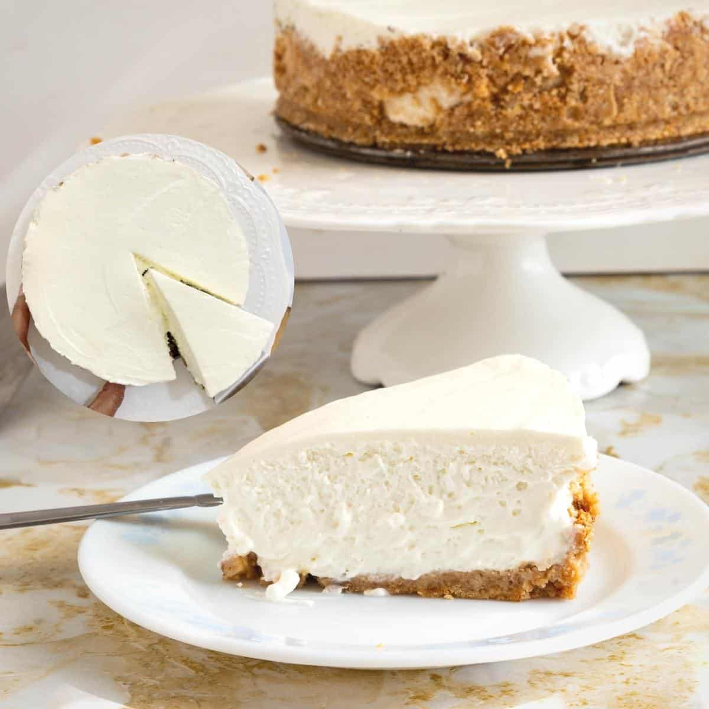

Cheesecake- No Bake Recipe

Ingredients
- 210g cream crackers
- 125g butter
- 250g cream cheese (left at room temperature)
- 90g icing sugar (when shopping- buy 130g total)
- 40g icing sugar (this portion is measured separately)
- 2 eggs (whites only)
- 1 cup water
- 2 teaspoons of gelatine powder
- 1/4 teaspoon cream of tartar
Instructions
Base
- To prepare the biscuit base: Blitz/pound cream crackers biscuits into fine crumbs.
*No blender option: add cream crackers into a clear plastic bag, and use a mug to gently crush the cream crackers into fine crumbs.
- In a saucepan, melt butter on low heat.
- Add cream cracker crumbs into melted butter and mix.
- Pour into a round spring pan (removable base), and press hard on the base to form an even and solid cake base. This is to create a sturdy cake base by removing as much air pockets as possible.
Filling
- In Mixing Bowl 1: Cut cream cheese into small cubes and blend/ electric beat with water and 90g icing sugar.
- Dissolve gelatine powder over a double boil.
- Add dissolved gelatine into cream cheese mixture and blend/ electric beat well.
- In Mixing Bowl 2: Electric beat together egg whites (no yolks), cream of tartar and 40g icing sugar until soft peaks are formed.
- Gently fold/ combine Bowl 2 (egg white mixture) into Bowl 1 (cream cheese mixture) using a spoon/ spatula. This should be done gently to preserve the air pockets of the egg white mixture (for that light creamy cheesecake texture). Forcefully combining the egg white mixtures can result in a dense cheesecake texture.
- Spring pan (removable base): Gently pour the final mixture into the spring pan containing the cream cracker base.
- Freeze for 4-5 hours (or longer) in freezer until firm.
- Finally: Remove cheesecake from spring pan, cut and serve.